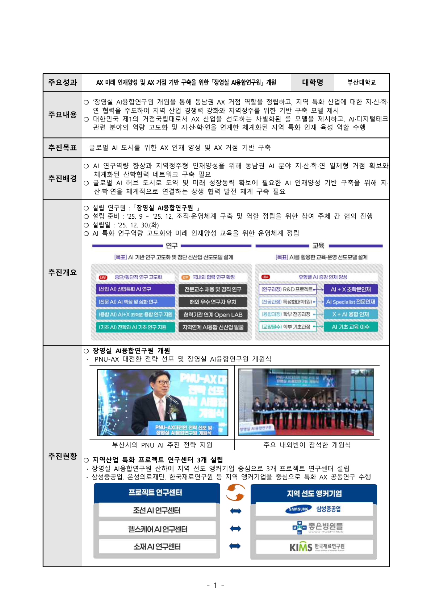
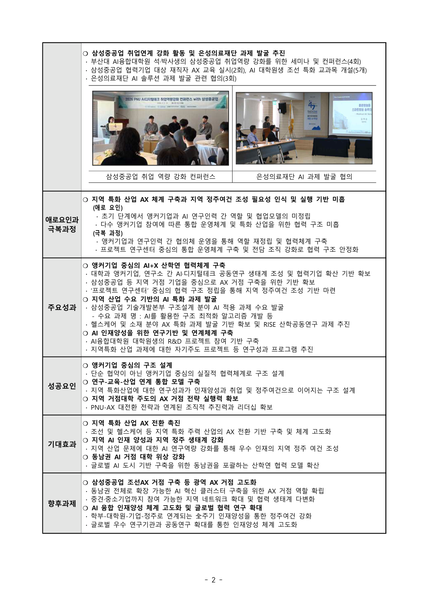
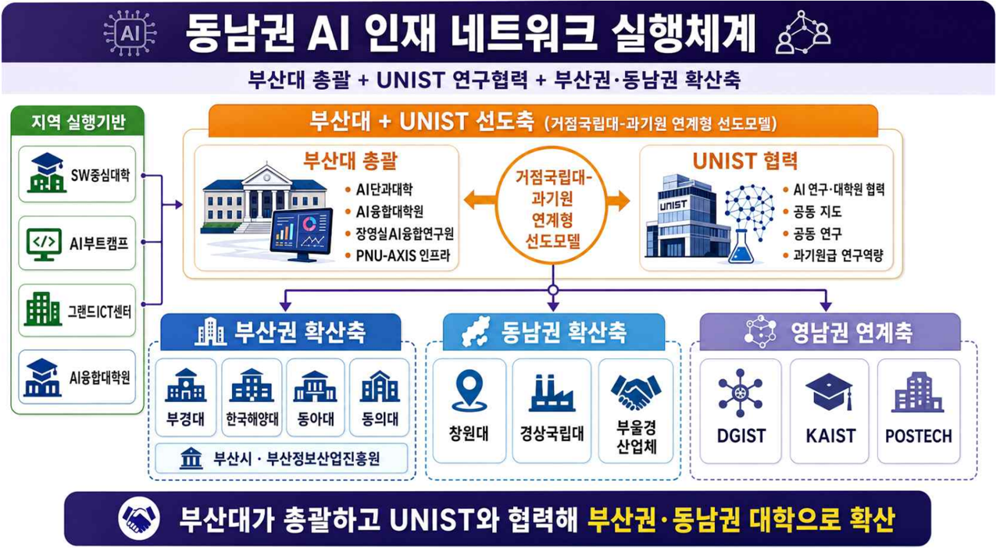
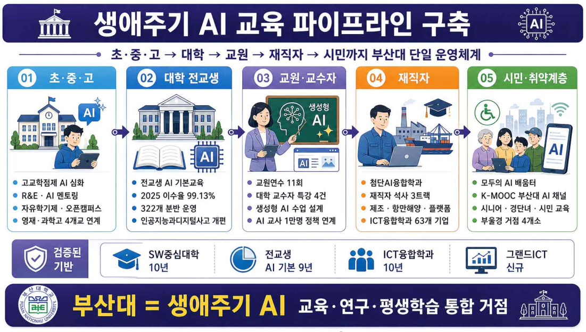
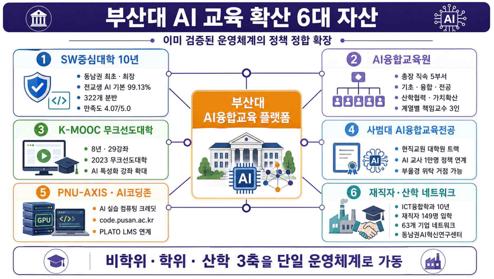
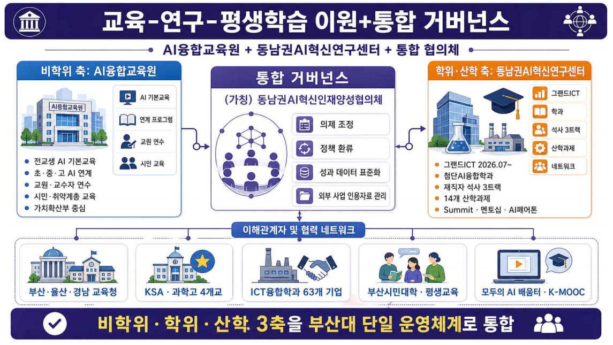
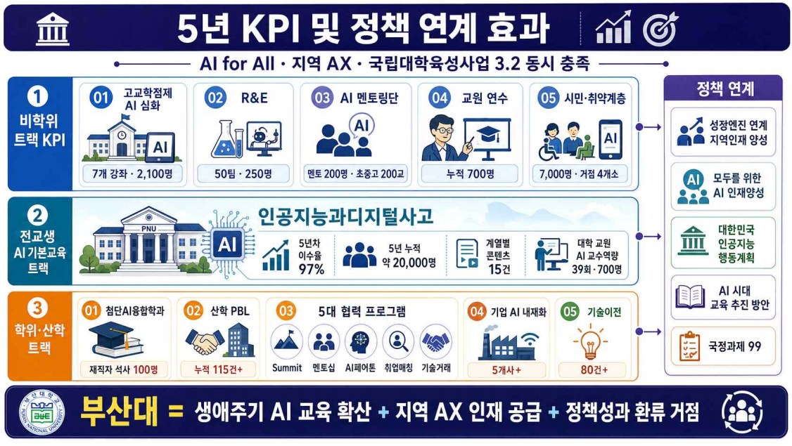

Section 1
📋개요 및 접근법
지역 AX 교육·연구 생태계 조성 분야 (과업 3) 교육부 지정 세부 과업과 부산대학교의 접근 방안
지역 AX 연구
지역 기업 참여 산학 공동 AX 연구 추진 — 산학 공동 AX 연구센터 구성·운영, 학생 참여형 연구 프로그램(URP), 대학원 패스트트랙
지역 AI 인재 네트워크
거점대학 중심의 지역 AI 인재 공급 생태계 구축 — 거점대-과기원 협의체, AI 중심대 연계, 재직자 AI 전환 교육 지원
교육-연구-평생학습 연계
초·중·고·평생학습과의 AI 교육 연계 확산 — 고교학점제 연계, 재직자 교육, K-MOOC 확대
📌 접근 전략
✦ 장영실AI융합연구원·PNU-IDC·부트캠프 운영 등 이미 준비된 산학협력 인프라를 기반으로 제안
✦ 동남권 AI 생태계 허브로서 부·울·경 지역 대학·기업·지자체를 하나의 네트워크로 연결
✦ 지역 전략산업(조선·의료·해양·제조)과의 도메인 특화 AX 연구로 차별화된 생태계 조성
✦ 동남권 AI 생태계 허브로서 부·울·경 지역 대학·기업·지자체를 하나의 네트워크로 연결
✦ 지역 전략산업(조선·의료·해양·제조)과의 도메인 특화 AX 연구로 차별화된 생태계 조성
Section 2
🔬지역 AX 연구
장영실AI융합연구원 중심의 산학연 공동 AX 연구체계 — 지역 성장엔진 특화 연구·산학 연계 인재 양성·학부생 연구 프로그램(URP) 통합 운영
2.1산학연 공동 AX 연구 센터 — 장영실AI융합연구원
'산학 공동 AX 연구센터'의 부산대 실행체이자 컨트롤 타워 장영실AI융합연구원
앵커기업 중심 AI+X 산학연 협력체계로 지역 특화산업 AX 전환 거점 구축
앵커기업 중심 AI+X 산학연 협력체계로 지역 특화산업 AX 전환 거점 구축
🏛️ 설립 개요
설립일: 2025년 12월 30일
설립 목표: 동남권 지·산·학·연 일체형 거점. AX 미래 인재양성 및 AX 거점 기반 구축
운영 구조: 앵커기업 중심 프로젝트 연구센터 → 협력기업 확산 → 취업·정주 연계
연계 자원: AI융합대학원 석·박사생 R&D + PNU-AXIS GPU + DS전문대학원
설립 목표: 동남권 지·산·학·연 일체형 거점. AX 미래 인재양성 및 AX 거점 기반 구축
운영 구조: 앵커기업 중심 프로젝트 연구센터 → 협력기업 확산 → 취업·정주 연계
연계 자원: AI융합대학원 석·박사생 R&D + PNU-AXIS GPU + DS전문대학원
✅ 이미 구축된 협력 성과
조선 특화 교과목 5개 개설
취업역량 강화 세미나·컨퍼런스 4회
협력기업 재직자 AX 교육 2회
AI 솔루션 과제 발굴 협의 3회
RISE 산학공동연구 과제 추진 중
취업역량 강화 세미나·컨퍼런스 4회
협력기업 재직자 AX 교육 2회
AI 솔루션 과제 발굴 협의 3회
RISE 산학공동연구 과제 추진 중

📐 장영실AI융합연구원 개원 성과 (클릭하여 확대)

📐 산학연 협력 실적 및 기대효과 (클릭하여 확대)
🏭 프로젝트 연구센터 3개 (앵커기업 중심)
조선·구조 AI센터
삼성중공업 앵커. AI 구조 최적화 알고리즘 개발. 조선 특화 교과목 5개·취업 연계 세미나 4회·협력기업 재직자 교육 2회
헬스케어 AI센터
은성의료재단 앵커. AI 솔루션 과제 발굴 협의 3회. 헬스케어 AX 특화 과제 기반 확보 (양산캠퍼스 연계)
소재·재료 AI센터
한국재료연구원 앵커. RISE 산학공동연구 과제 추진. 소재 분야 AX 특화 과제 발굴
🔭 전략 특화 연구센터 확장 계획
🧠 PNU AI Context Center
Sovereign AI 관점 Ontology/Context 연구 — 조선·항만물류·해양수산·국방 분야
Computing·LLM은 해외 기반 활용 불가피하나 Context/Ontology는 국가·산업 안보상 자체 구축 필요
공공기관·연구소와 연계한 B2G 과제 발굴 지향
Computing·LLM은 해외 기반 활용 불가피하나 Context/Ontology는 국가·산업 안보상 자체 구축 필요
공공기관·연구소와 연계한 B2G 과제 발굴 지향
📐 PNU AI E&E Center
Education & Ethics 분야 연구 전담
AI 교육 콘텐츠 연구·개발 — EduTech 기업·교육청 연계
Section 4 교육-연구-평생학습 연계 부분과 통합 운영
AI 윤리·신뢰 모듈 개발 및 권역 표준화
AI 교육 콘텐츠 연구·개발 — EduTech 기업·교육청 연계
Section 4 교육-연구-평생학습 연계 부분과 통합 운영
AI 윤리·신뢰 모듈 개발 및 권역 표준화
다양성의료/의생명과 금융 인공지능 융합연구센터 필요성
⚠️산업부/교육부가 지역 성장엔진 산업으로 지정하지 않았더라도 지역과 학생 수요를 고려할 때 중요한 분야
✦의학, 의생명 분야 인공지능 융합 연구센터 - 양산캠퍼스와 연계
✦금융과 인공지능 융합, 핀테크 연구센터 - 문현 금융단지
🎯장영실AI융합연구원 산하에 구축하기 힘들더라도 함께 언급하는 것이 제안 완성도 관점에서 바람직
✦의학, 의생명 분야 인공지능 융합 연구센터 - 양산캠퍼스와 연계
✦금융과 인공지능 융합, 핀테크 연구센터 - 문현 금융단지
🎯장영실AI융합연구원 산하에 구축하기 힘들더라도 함께 언급하는 것이 제안 완성도 관점에서 바람직
2.2산학 연계 인재 양성 제도
대학원생을 연구 → 인턴십 → 취업 → 지역 정주로 이어지는 선순환 구조에 편입.
산학 공동 지도교수제·대학원생 교류 인턴십·AX 프로젝트 석사를 패키지로 운영
산학 공동 지도교수제
대학 교수 + 앵커기업 연구책임자 공동 지도. 산업 수요 기반 연구 주제 발굴 → 학위 취득 지원. 현장 문제를 논문 주제로 직결
대학원생 교류 인턴십
앵커기업·협력기업 현장 인턴십 (학기·하계·동계). 삼성중공업 취업 연계 트랙 운영 중. 인턴십 → 취업 → 지역 정주 선순환
AX 프로젝트 석사
AX 연구 프로젝트 성과물로 석사학위 취득 지원. 프로젝트 연구센터 산하 자기주도 연구 과제 연계. 산업 석사·일반 석사 병행
패스트트랙 연계 패키지
학·석사/학·석·박 패스트트랙 + 우수인재 장학금 + 연구장려금 + 글로벌 공동 연구 프로그램. 26.2월 고등교육법 개정 기반
2.3학부생 연구 프로그램(URP) & 지역 AX 프로젝트 수행
🌟우리의 핵심 AX 인재 양성 방안인 PNU 1000 AX 인재 양성 프로그램과 지역 AX 프로젝트는 바로 맞닿아 있음
🎯"PNU 1000 AX"를 즉각적으로 실행하려면 사업 제안 단계에서 이미 수요가 되는 AX 프로젝트 목록 상당수 구축 필요
📌과제 수행 의지와 진정성을 보이는 증거로 활용
⚙️AX-PBL 과제 수요를 Bottom-Up 방식으로 획득하기 위한 시스템 구축 필요
🖥️AX-PBL 과제 취합, 학석연계 프로그램 신청자 정보 수집 등을 위한 AI-Enabled Pilot System (정식 시스템 구축 전에, 생성형 AI로 빠르게 만들어 쓰는 실험적·임시 시스템)을 조속히 구축하고 정보를 취합
🎯"PNU 1000 AX"를 즉각적으로 실행하려면 사업 제안 단계에서 이미 수요가 되는 AX 프로젝트 목록 상당수 구축 필요
📌과제 수행 의지와 진정성을 보이는 증거로 활용
⚙️AX-PBL 과제 수요를 Bottom-Up 방식으로 획득하기 위한 시스템 구축 필요
🖥️AX-PBL 과제 취합, 학석연계 프로그램 신청자 정보 수집 등을 위한 AI-Enabled Pilot System (정식 시스템 구축 전에, 생성형 AI로 빠르게 만들어 쓰는 실험적·임시 시스템)을 조속히 구축하고 정보를 취합

🔬 AX-PBL과 AX 프로젝트
🚀PNU 1000 AX 인재 양성 프로그램의 기초인 AX 프로젝트 기반 AX-PBL
✦지역 수요에 기반한 수백개의 Bottom-Up AX 프로젝트
✦AI Context Center, AI E&E Center 등을 통해 전략적으로 추진할 수개의 장기 Top-Down AX 프로젝트
✦AX-PBL을 학기·하계·동계 3트랙 운영
✦AX 프로젝트 우수 성과자 → 글로벌 공동 연구 프로그램 연계
✦지역 수요에 기반한 수백개의 Bottom-Up AX 프로젝트
✦AI Context Center, AI E&E Center 등을 통해 전략적으로 추진할 수개의 장기 Top-Down AX 프로젝트
✦AX-PBL을 학기·하계·동계 3트랙 운영
✦AX 프로젝트 우수 성과자 → 글로벌 공동 연구 프로그램 연계
🌐 지역 대학 개방 URP
부산권 — 부경대·한국해양대·동아대·동의대 등
동남권 — 창원대·경상국립대 등
장영실연구원-지역 대학 협약 기반 운영
하계·동계 집중 프로그램 + 온라인 병행
지역 AI 인재 네트워크(Section 3)와 연동
동남권 — 창원대·경상국립대 등
장영실연구원-지역 대학 협약 기반 운영
하계·동계 집중 프로그램 + 온라인 병행
지역 AI 인재 네트워크(Section 3)와 연동
📊 5년 KPI 목표치 (예)
🏭
8개
프로젝트 연구센터
(3개→8개)
(3개→8개)
👩🏫
30명
산학 공동
지도교수
지도교수
🎓
80명
AX 프로젝트
석사 배출
석사 배출
🔬
지역 수요 바탕으로 수행한 AX 프로젝트
Section 3
🤝지역 AI 인재 네트워크
부산대-UNIST 공동 선도체계를 중심으로 동남권 대학·산업체·지자체를 하나의 AI 인재 혁신 운영 협의체로 연결하는 거점 플랫폼 구축 전략
3.1거점대-과기원 선도 운영체계
부산대가 단순 'AI 단과대학 보유'에 그치지 않고,
UNIST와 협력해 동남권 대학 전체에 실질적 리더십을 발휘하는 주관기관으로
강력히 포지셔닝 — 학점교류·교원 겸직·공동 R&D·GPU 공동활용까지 포괄하는
(가칭) 동남권 AI 인재 혁신 운영 협의체 출범
🏆 부산대 주관기관 7대 우위
AI 단과대학 신설
2026년 3월 신설 추진. 학사조직 기반으로 협의체 운영 즉시 실행 가능
탄탄한 협력 네트워크
과기정통부 AI융합대학원 운영 중. 129개 협력기관 네트워크 보유
SW중심대학 10년
동남권 가장 검증된 SW·AI 교육사업 운영 경험. 10년 연속 수행
거점대-과기원 연계
UNIST와 직접 협력 가능한 지리적·정책적 여건. 거점국립대-과기원 연계형 선도모델 제시
실무 채널 보유
부산시·부산정보산업진흥원 및 부산권 대학 협의 채널. 월례 학장급 협의체 운영 중
수직·수평 통합
DS전문대학원·장영실연구원·PNU-AXIS 수직 통합 + UNIST·창원대·경상국립대 수평 확장
🏗️ 선도 운영체계 구성 — (가칭) 동남권 AI 인재 혁신 운영 협의체
🔷 1차 선도축 — 부산대 + UNIST
AI단과대학 — 학사·교과·학점교류 최종 조정
장영실AI융합연구원 — 협의체 운영·공동 R&D·글로벌 채널
AI융합교육원 — 공통 교과·마이크로디그리·AI 윤리 모듈
UNIST — 과기원급 AI 연구·대학원 협력축
장영실AI융합연구원 — 협의체 운영·공동 R&D·글로벌 채널
AI융합교육원 — 공통 교과·마이크로디그리·AI 윤리 모듈
UNIST — 과기원급 AI 연구·대학원 협력축
🔶 단계적 확산 구조
부산권 — 부경대·한국해양대·동아대·동의대
동남권 — 창원대·경상국립대 등 부울경 대학
영남권 — DGIST·POSTECH·KAIST 연계
실행기반 — 부산시·부산정보산업진흥원·SW중심대학·AI부트캠프·그랜드ICT
동남권 — 창원대·경상국립대 등 부울경 대학
영남권 — DGIST·POSTECH·KAIST 연계
실행기반 — 부산시·부산정보산업진흥원·SW중심대학·AI부트캠프·그랜드ICT

📐 동남권 AI 인재 네트워크 실행 체계
3.2핵심 전략 3개 — 교육·연구·인프라 통합
전략 1 — 거점대-과기원 협력 고도화 (교육 및 인적 교류)
협력체계: 부산대(총괄) + UNIST(연구/대학원 협력축) 선도 운영체계 구성,
동남권 대학 단계적 연결
자원·교과 공유: KNU10 + UNIST LMS 통합 연계, 공통 마이크로디그리·AI 윤리 모듈 즉시 가동
자원·교과 공유: KNU10 + UNIST LMS 통합 연계, 공통 마이크로디그리·AI 윤리 모듈 즉시 가동
인적 결합: 교원 이중 소속(교육공무원법 §15 겸직특례)·산업체 공동임용·공동 지도교수제·패스트트랙(26.2월 고등교육법 개정 기반)
고도화: 공동 학위/복수학위·차기 AI융합대학원 공동 기획·공동 교원 인사위원회 운영 검토
고도화: 공동 학위/복수학위·차기 AI융합대학원 공동 기획·공동 교원 인사위원회 운영 검토
전략 2 — AI 중심대·AX 대학원 사업 연계 (연구 및 산업 연계)
사업 성과 공유: SW중심대학·AI부트캠프·그랜드ICT·AI융합대학원 등 기존 사업을 선도모델과 연결.
우수/실패 사례 공개로 현장성 강화
공동 연구·산업 연계: 동남권 전략산업(조선·모빌리티·항만·에너지·의료) AI+X 프로젝트,
기업 데이터 기반 PBL, 공동 R&D 데모데이 연 2회 개최
전략 3 — 4계층 자원 공유 및 확산 (인프라)
🖥️ 컴퓨팅
PNU-AXIS GPU 시간을 동남권 컨소시엄 · UNIST 우선 배정
📦 데이터
산업 도메인 데이터셋 (조선·모빌리티 등) 공동 활용
🤖 모델
도메인 특화 LLM · AI Agent — AI융합대학원·AX 융합학부 공동 개발
📚 교과
K-MOOC 부산대 AI 채널 · AI 윤리 모듈 → 권역 공통 자원 확산
3.2동남권 AI 인재 혁신 — 5년 추진 목표 & KPI
5개 추진 목표: 선도형 교육모델 확산 · 실질적 학사 공유 · 강력한 인적 결합 ·
4대 자원 공동활용(GPU·데이터·모델·K-MOOC) · 지역 산업 AX 견인
📊 5년 사업 주요 KPI (예)
🎓 교육·학사 공유
학점교류 1,000명 · 공동교과 30과목
마이크로디그리 표준 8개 · 이수자 500명
AI 윤리·신뢰 모듈 8개 · 협의체 9개교 100% 채택
마이크로디그리 표준 8개 · 이수자 500명
AI 윤리·신뢰 모듈 8개 · 협의체 9개교 100% 채택
👥 인적 결합
겸직 교원 20명 · 공동임용 10명
공동 지도 100명 · 패스트트랙 진학 75명
공동 지도 100명 · 패스트트랙 진학 75명
🔬 공동 R&D
공동 연구단 3개 · 누적 과제 50건
글로벌(EU·NSF) 3건
글로벌(EU·NSF) 3건
🖥️ 인프라 공동활용
외부 개방 50만 GPU·h · 참여 기관 8개
산업 데이터셋 25종 · 도메인 특화 LLM 3종
산업 데이터셋 25종 · 도메인 특화 LLM 3종
Section 4
🔄교육-연구-평생학습 연계
학부 교육·대학원 연구·산업 현장·평생학습을 하나의 순환 생태계로 연결하는 통합 연계 체계
4.1생애주기 AI 교육 파이프라인 구축
초·중·고 → 대학(전교생 AI 기본) → 교원 → 재직자 학위·비학위 → 시민·취약계층까지
부산대 단일 운영체계 안에서 단계 간 콘텐츠·이수 이력이 연결되는
생애주기 AI 교육 파이프라인 구축

📐 생애주기 AI 교육 파이프라인 & 추진 개요
🏆 부산대의 리더십 — 이미 검증된 운영체계
SW중심대학 10년
동남권 최초·10년 연속. 전교생 AI 기본교육 이수율 99.13%·322분반 (2025년 기준)
AI융합교육원
총장 직속 5부서 운영. 가치확산부가 재직자·시민 AI 평생교육 연계 주관
K-MOOC 무크선도대학
8년·29강좌·2023 선정. 매년 4개 이상 AI 특성화 강좌 운영
사범대 AI융합교육전공
현직교원 대학원 트랙 기설치. 정부 「AI 교사 1만명」 동남권 위탁 거점 가능
PNU-AXIS + AI코딩존
GPU 인프라·AI 실습 크레딧·code.pusan.ac.kr 코딩역량시스템·PLATO LMS
재직자 네트워크
ICT융합학과 10년 실적 (재직자 149명·63개 기업). 동남권AI혁신연구센터 착수 ('26.07~)

📐 부산대 AI 교육 확산 6대 자산 & 부울경 권역 우위 (클릭하여 확대)
4.2이원+통합 거버넌스 & 협력체계
비학위·학위·산학 3축을 단일 운영체계로 가동할 수 있는 9개 거점대 중 유일한 거점대.
AI융합교육원(비학위) + 동남권AI혁신연구센터(학위·산학) + 동남권AI혁신인재양성협의체(통합)
🏫 비학위 축
AI융합교육원 총장 직속 5부서
✦ 전교생 AI 기본교육
✦ 초·중·고 연계 프로그램
✦ 교원 연수
✦ 시민·취약계층 AI 교육
✦ 재직자 비학위 트랙
✦ 전교생 AI 기본교육
✦ 초·중·고 연계 프로그램
✦ 교원 연수
✦ 시민·취약계층 AI 교육
✦ 재직자 비학위 트랙
🔬 학위·산학 축
동남권AI혁신연구센터 (그랜드ICT, '26.07~)
✦ 첨단AI융합학과 재직자 석사
3트랙 (제조·항만해양·플랫폼)
연 20명 × 5년 = 100명
✦ 14개 산학과제
✦ 5대 협력 프로그램
✦ 첨단AI융합학과 재직자 석사
3트랙 (제조·항만해양·플랫폼)
연 20명 × 5년 = 100명
✦ 14개 산학과제
✦ 5대 협력 프로그램
🏛️ 통합 거버넌스
(가칭) 동남권AI혁신인재양성협의체
✦ 양 축 의제 조정
✦ 정책 환류 및 표준화
✦ 3개 시·도교육청
✦ 4개 영재·과학고 (KSA 등)
✦ 7개 대기업 산업체
✦ 양 축 의제 조정
✦ 정책 환류 및 표준화
✦ 3개 시·도교육청
✦ 4개 영재·과학고 (KSA 등)
✦ 7개 대기업 산업체
🤝 주요 협력 파트너
교육청·학교 — 부산·울산·경남 시·도교육청, KSA·부산과학고·경남과학고·울산과학고
산업체 7개사 — HD현대중공업·한화오션·한화에어로스페이스·삼성중공업·HMM·KAI·삼성SDI
산업체 7개사 — HD현대중공업·한화오션·한화에어로스페이스·삼성중공업·HMM·KAI·삼성SDI
지역 실행기반 — 부산시민대학·평생교육진흥원·도서관, 유아교육진흥원, 동래구청, 네이버 커넥트 재단
정책 연계 — 「AI 교사 1만명」·「모두의 AI 배움터」·K-MOOC·그랜드ICT(NIPA)·국립대학육성사업
정책 연계 — 「AI 교사 1만명」·「모두의 AI 배움터」·K-MOOC·그랜드ICT(NIPA)·국립대학육성사업

📐 이원+통합 거버넌스와 협력체계
4.35년 사업 KPI 목표 & 평생학습 교육 체계

📐 5년 KPI 및 정책 연계 효과 (클릭하여 확대)
📊 주요 KPI 목표치 (5년 누적)
🎓 비학위 트랙
고교학점제 AI 강좌 7개 · 2,100명
영재·과학고 R&E 50팀 · 250명
AI 멘토링단 200명 · 200교
교원 연수 누적 700명
「AI 교사 1만명」위탁 1,400명
재직자 비학위 3,500명
시민·취약계층 7,000명
K-MOOC 신규 35강좌 · 7만 수강
영재·과학고 R&E 50팀 · 250명
AI 멘토링단 200명 · 200교
교원 연수 누적 700명
「AI 교사 1만명」위탁 1,400명
재직자 비학위 3,500명
시민·취약계층 7,000명
K-MOOC 신규 35강좌 · 7만 수강
📚 전교생 AI 기본교육
5년차 이수율 97%
5년 누적 약 20,000명
계열별 콘텐츠 15건
교원 AI 교수역량
누적 39회 · 700명
산출물 250건
5년 누적 약 20,000명
계열별 콘텐츠 15건
교원 AI 교수역량
누적 39회 · 700명
산출물 250건
🏭 학위·산학 (그랜드ICT)
재직자 석사 누적 100명
산학 PBL 누적 115건+
5대 협력 프로그램 연 5건
기업 AI 내재화 5개사+
기술이전 80건+
PNU-AXIS 평생학습자
외부 GPU 누적 14만 h
산학 PBL 누적 115건+
5대 협력 프로그램 연 5건
기업 AI 내재화 5개사+
기술이전 80건+
PNU-AXIS 평생학습자
외부 GPU 누적 14만 h
🎯 전략 요약 — 5대 핵심 전략